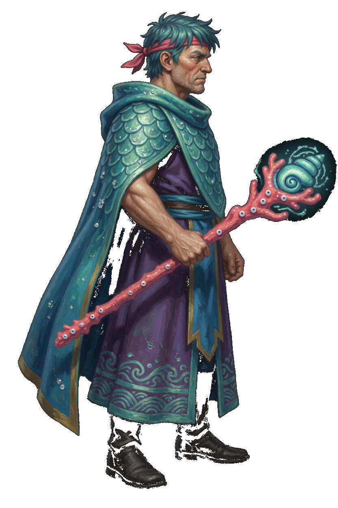
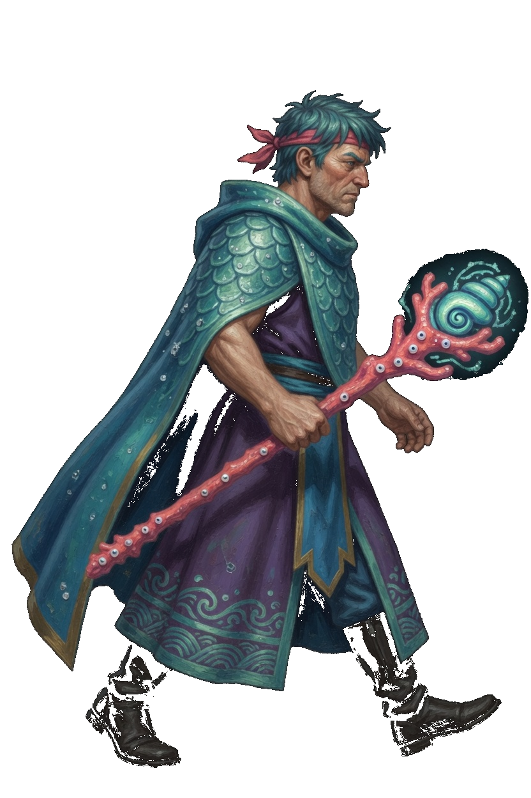
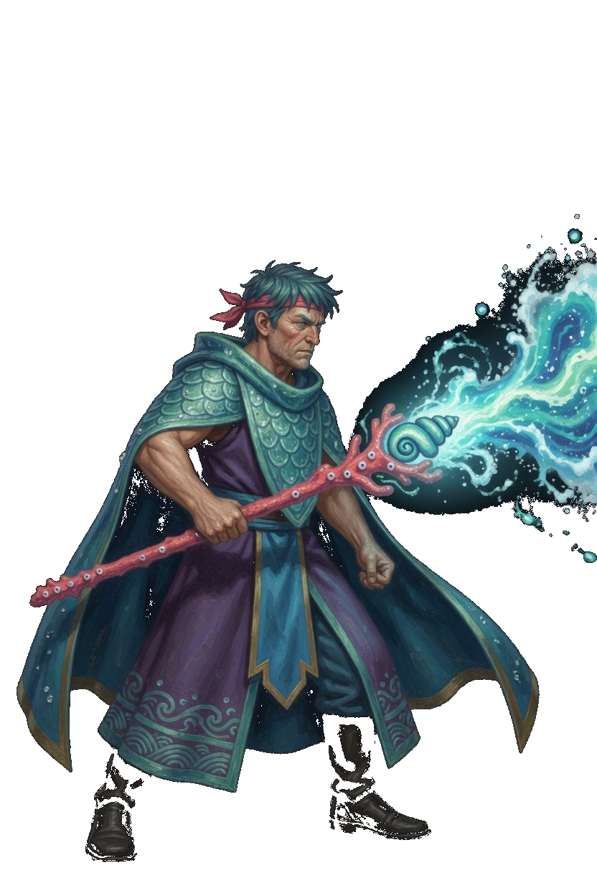
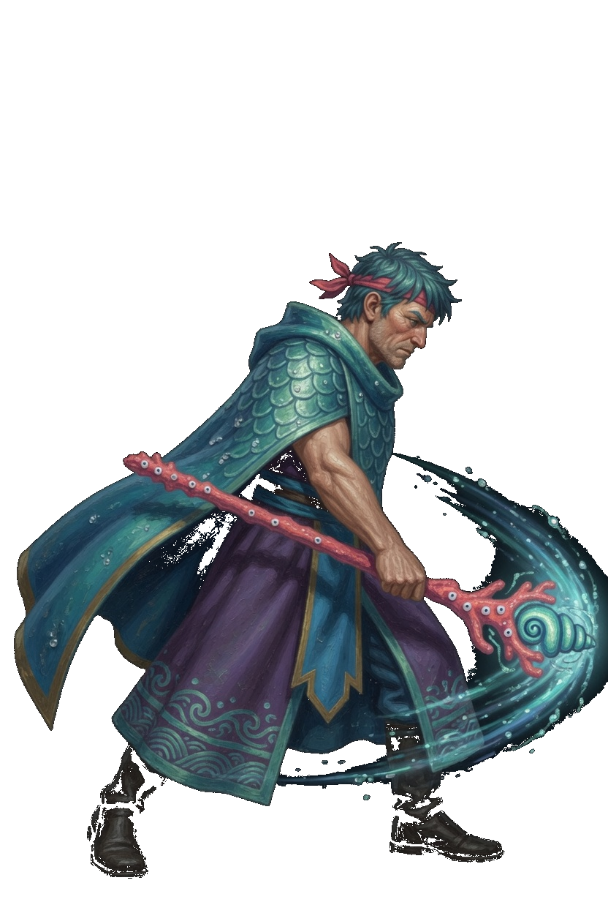
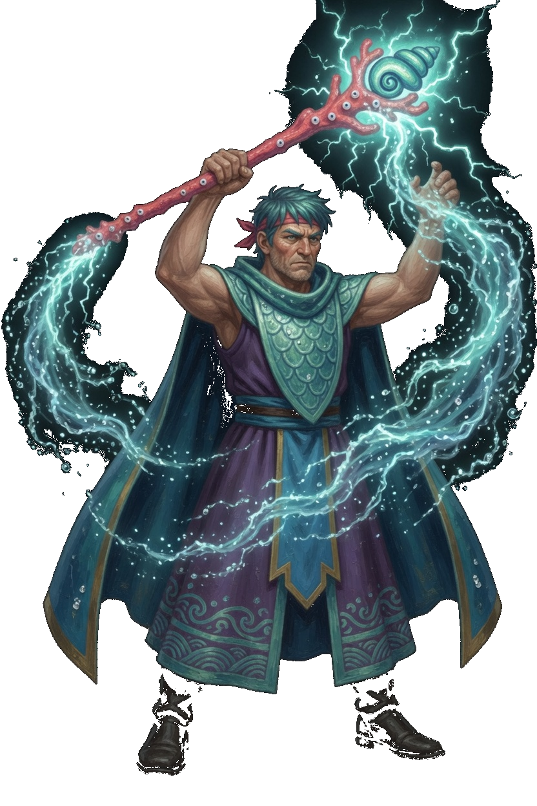
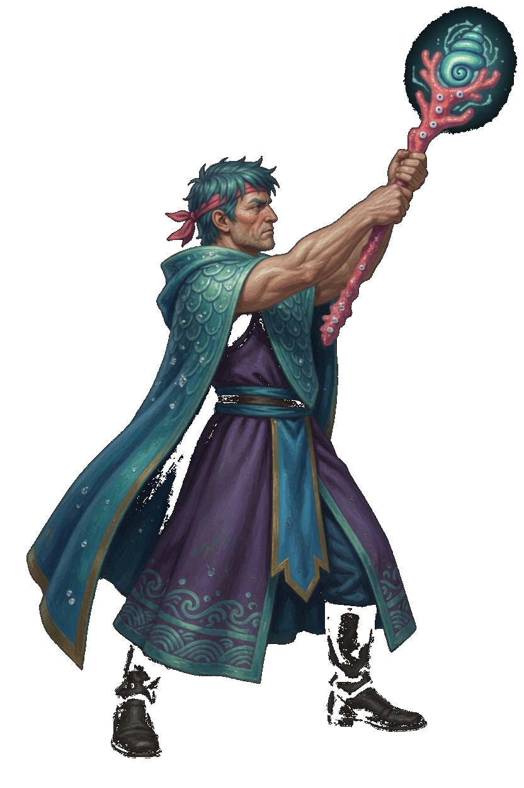
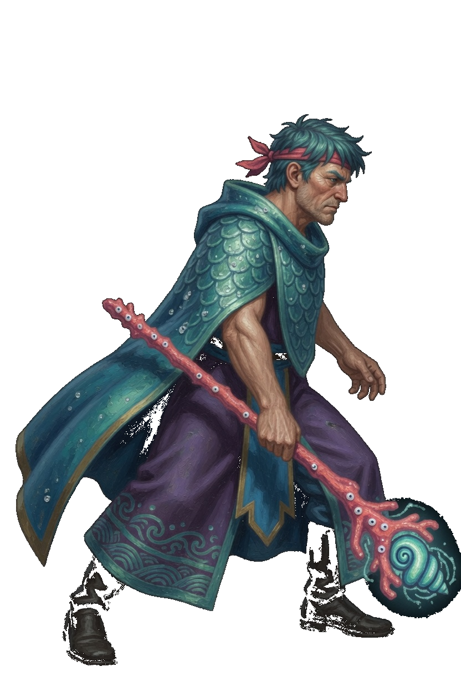
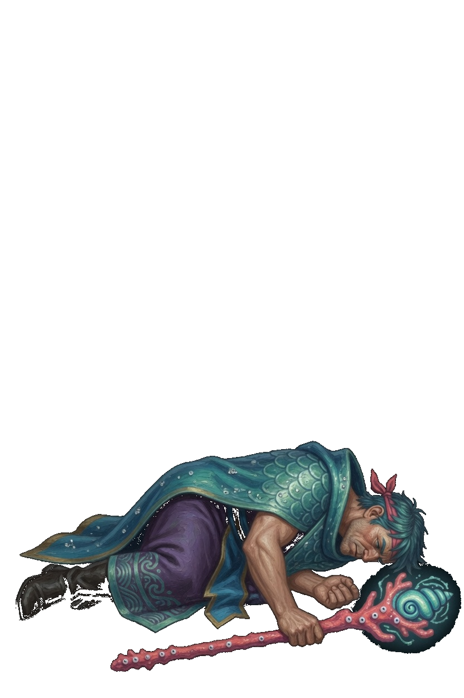
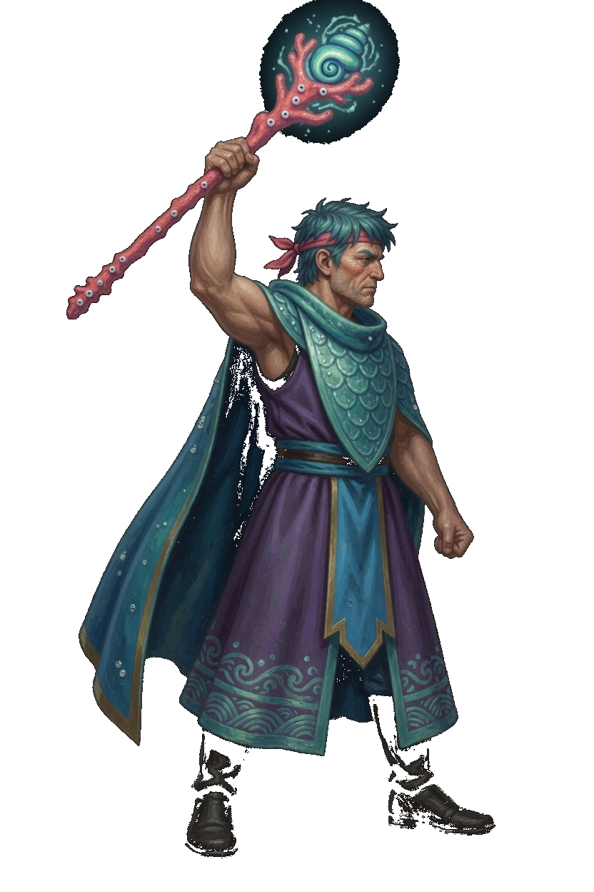

Seidon · Tide Seer
This card is the only pose list. Native facing is right. The whole sprite flips. Teal scale mantle, purple robe, coral staff, pink ribbon. He is a gun, so the corner step is Slip. He has no move named Dash. Geodesic keeps that book name.
| Book | Value |
|---|---|
| Basic | Tide Bolt · range 8.0 |
| Body | 725 health · 30 damage · 0.80 attacks/s · speed 3.5 · armor 5 · range 8.0 · mana 120 · regen 10 |
| Moves | Undertow · Current · Geodesic |
| Stride | Slip · he is a gun · 30s · cost 8 |
Keys

Staff forward, both boots planted. This frame opens Tide Bolt, Undertow, Current, and Geodesic.

One stride. The right boot leads. The fight clip is idle, then this stride.

The staff thrusts. The traveling tide is drawn off the body. Frame 1 and frame 3 are idle.

The staff sweeps low. The pull ring is the effect.

The staff is raised for the allies. The ring is the effect.

The staff lofts the shot. The book name stays Geodesic. Arkos keeps his own geodesic picture.

The corner step. There is no Close key and no Dash key.

Down in the lower part of the canvas. The staff stays with the body.

The staff is raised. Both boots are planted. This is not Current.